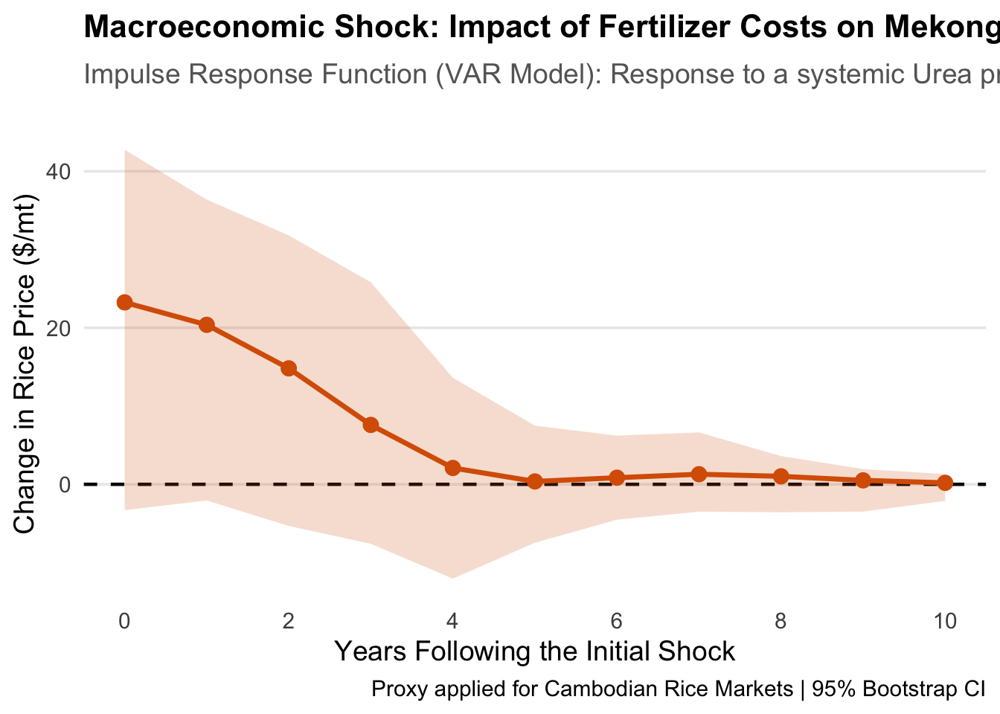

Appendix A — Sunny Side Egg
Description
We wanted to explore the CMO dataset to understand the relationship between different commodities of various countries overtime, potentially exploring forecasting models for price prediction.
Library Used
Reasoning
Research Questions
Matin: What is the effect of fertilizers price on jasmine rice in the south east asian region?
Jospeh: To understand the price changes of arabica, cocoa, robusta with regards to macroeconomic state of the world!
Ari: To understand the effects of crude oil prices impact different groups of commodities in terms of price or price projections.
Reason for Exploration
Group interests in the idea of how macroeconomics affects the world we live in, and our daily lives in regards to food materials.
Communication Policy
We have created a google chat, and we will be meeting every Thursday weekly at 3-4PM for overseeing process.
Roles
Matin: technical assistant and main person of contact; will talk with Amin and preceptors
Ari: technical lead
Joseph: Team Leader
Conflict Resolution
We will adapt to any sudden changes, and if anyone needs help we would offer replacement tasks. Accomodation is key in our group, and we will periodically checkup with each group members with their assigned tasks.
Implementation Plan
Ch1: Everyone comes up with a research question and initial plan or visualization so that we can vote on which is the best paths.
Data
Import
CMO: Commodity Markets Output
Data Cleaning
Time Series Data
Analysis
VAR Model
VAR Estimation Results:
=========================
Endogenous variables: crude_oil_average, urea, rice_thai_5_percent
Deterministic variables: both
Sample size: 64
Log Likelihood: -939.115
Roots of the characteristic polynomial:
0.6309 0.5815 0.5815 0.45 0.45 0.3849
Call:
vars::VAR(y = ts_data, p = 2, type = "both")
Estimation results for equation crude_oil_average:
==================================================
crude_oil_average = crude_oil_average.l1 + urea.l1 + rice_thai_5_percent.l1 + crude_oil_average.l2 + urea.l2 + rice_thai_5_percent.l2 + const + trend
Estimate Std. Error t value Pr(>|t|)
crude_oil_average.l1 0.940217 0.193150 4.868 9.6e-06 ***
urea.l1 -0.017752 0.031060 -0.572 0.5699
rice_thai_5_percent.l1 0.007300 0.024828 0.294 0.7698
crude_oil_average.l2 -0.259910 0.184121 -1.412 0.1636
urea.l2 0.005763 0.029072 0.198 0.8436
rice_thai_5_percent.l2 0.021782 0.023819 0.914 0.3644
const -7.115257 4.872308 -1.460 0.1498
trend 0.345285 0.144992 2.381 0.0207 *
---
Signif. codes: 0 '***' 0.001 '**' 0.01 '*' 0.05 '.' 0.1 ' ' 1
Residual standard error: 11.62 on 56 degrees of freedom
Multiple R-Squared: 0.8753, Adjusted R-squared: 0.8597
F-statistic: 56.14 on 7 and 56 DF, p-value: < 2.2e-16
Estimation results for equation urea:
=====================================
urea = crude_oil_average.l1 + urea.l1 + rice_thai_5_percent.l1 + crude_oil_average.l2 + urea.l2 + rice_thai_5_percent.l2 + const + trend
Estimate Std. Error t value Pr(>|t|)
crude_oil_average.l1 0.90768 1.31044 0.693 0.4914
urea.l1 0.43438 0.21073 2.061 0.0439 *
rice_thai_5_percent.l1 0.13706 0.16845 0.814 0.4193
crude_oil_average.l2 -0.24859 1.24918 -0.199 0.8430
urea.l2 -0.23474 0.19724 -1.190 0.2390
rice_thai_5_percent.l2 0.09104 0.16160 0.563 0.5755
const -27.74140 33.05652 -0.839 0.4049
trend 2.24397 0.98371 2.281 0.0264 *
---
Signif. codes: 0 '***' 0.001 '**' 0.01 '*' 0.05 '.' 0.1 ' ' 1
Residual standard error: 78.85 on 56 degrees of freedom
Multiple R-Squared: 0.7017, Adjusted R-squared: 0.6644
F-statistic: 18.82 on 7 and 56 DF, p-value: 1.211e-12
Estimation results for equation rice_thai_5_percent:
====================================================
rice_thai_5_percent = crude_oil_average.l1 + urea.l1 + rice_thai_5_percent.l1 + crude_oil_average.l2 + urea.l2 + rice_thai_5_percent.l2 + const + trend
Estimate Std. Error t value Pr(>|t|)
crude_oil_average.l1 1.12728 1.19665 0.942 0.3502
urea.l1 0.09061 0.19243 0.471 0.6395
rice_thai_5_percent.l1 0.65946 0.15382 4.287 7.2e-05 ***
crude_oil_average.l2 -0.37610 1.14071 -0.330 0.7429
urea.l2 0.10674 0.18011 0.593 0.5558
rice_thai_5_percent.l2 -0.26351 0.14757 -1.786 0.0796 .
const 97.36944 30.18610 3.226 0.0021 **
trend 0.95522 0.89829 1.063 0.2922
---
Signif. codes: 0 '***' 0.001 '**' 0.01 '*' 0.05 '.' 0.1 ' ' 1
Residual standard error: 72 on 56 degrees of freedom
Multiple R-Squared: 0.7531, Adjusted R-squared: 0.7222
F-statistic: 24.4 on 7 and 56 DF, p-value: 7.192e-15
Covariance matrix of residuals:
crude_oil_average urea rice_thai_5_percent
crude_oil_average 135.1 648.4 300.1
urea 648.4 6216.7 2736.0
rice_thai_5_percent 300.1 2736.0 5183.9
Correlation matrix of residuals:
crude_oil_average urea rice_thai_5_percent
crude_oil_average 1.0000 0.7076 0.3587
urea 0.7076 1.0000 0.4820
rice_thai_5_percent 0.3587 0.4820 1.000010-Year Forecast
Impulse Response Function (IRF)
Code
irf_model <- irf(var_model,
impulse = "urea",
response = "rice_thai_5_percent",
n.ahead = 10,
boot = TRUE)
irf_df <- data.frame(
year_after_shock = 0:10,
estimate = as.numeric(irf_model$irf$urea),
lower_ci = as.numeric(irf_model$Lower$urea),
upper_ci = as.numeric(irf_model$Upper$urea)
)
ggplot(irf_df, aes(x = year_after_shock, y = estimate)) +
geom_hline(yintercept = 0, color = "black", size = 0.8, linetype = "dashed") +
geom_ribbon(aes(ymin = lower_ci, ymax = upper_ci), fill = "#D95F02", alpha = 0.2) +
geom_line(color = "#D95F02", size = 1.2) +
geom_point(color = "#D95F02", size = 3) +
theme_minimal(base_size = 14) +
theme(
plot.title = element_text(face = "bold", size = 16, margin = margin(b = 10)),
plot.subtitle = element_text(color = "gray40", margin = margin(b = 20)),
panel.grid.minor = element_blank(),
panel.grid.major.x = element_blank()
) +
labs(
title = "Macroeconomic Shock: Impact of Fertilizer Costs on Mekong Rice",
subtitle = "Impulse Response Function (VAR Model): Response to a systemic Urea price spike",
x = "Years Following the Initial Shock",
y = "Change in Rice Price ($/mt)",
caption = "Proxy applied for Cambodian Rice Markets | 95% Bootstrap CI"
) +
scale_x_continuous(breaks = seq(0, 10, 2))